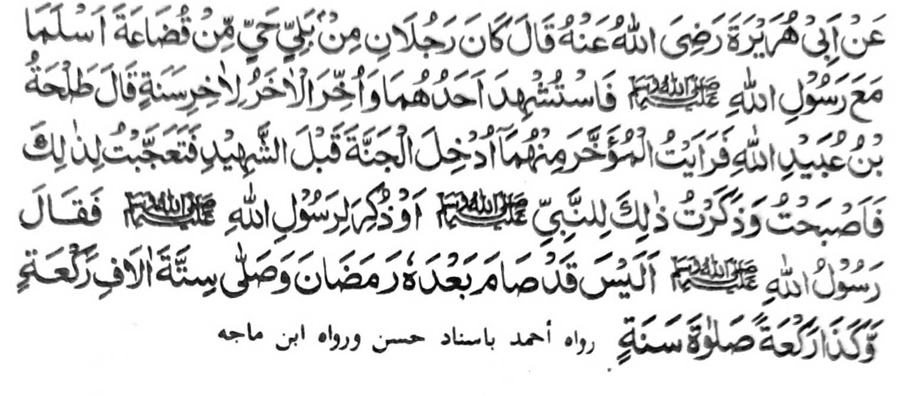

Miyaka thitayan ko Abu Hurairah (Radhiallaho ’Anho) a pitharo iyan a adena a dowa a mama a phoon ko melagid a bangsa a parengan somiyoled ko Islam ko hadapan o Rasulollah (Sallallaho 'Alaihi Wasallam). Miyashaheed so isa kiran na miyatay so ikadowa ko oriyan o saragon. Pitharo o Talha bin Ubaidollah (Radhiallaho Anho), 'Pithataginep aken a miyaona somoled sa Sorga so miyaori matay a di so miyashaheed na miyamemesa ko na miyakanao ako. Piyanothol aken angkanan (a laginepen) ko Rasulollah (Sallallaho 'Alaihi Wasallam) odi na miyapanothol si-i ko Rasulollah (Sallallaho 'Alaihi Wasallam) na pitharo o Rasulollah (Sallallaho 'Alaihi Wasallam), 'Ino, badi mata-an a miyaka phowasa so miya-ori matay si-i kiran sa isa a Ramadhan go miyakazambayang sa saragon a manga nem gibo ago kalalawanan ka rak'at?"
Mata-an a di tano katawani ay kala-i bali o Sambayang. So Rasulollah (Sallallaho 'Alaihi Wasallam) na lalayonon pekhaneg a gi-i niyan katharo-a sa, "So ikapiya o pangilai-layan aken na zisi-i ko Sambayang." Sabap san na antona-a pen i makalawan sa kala-i arga ko Sambayang.